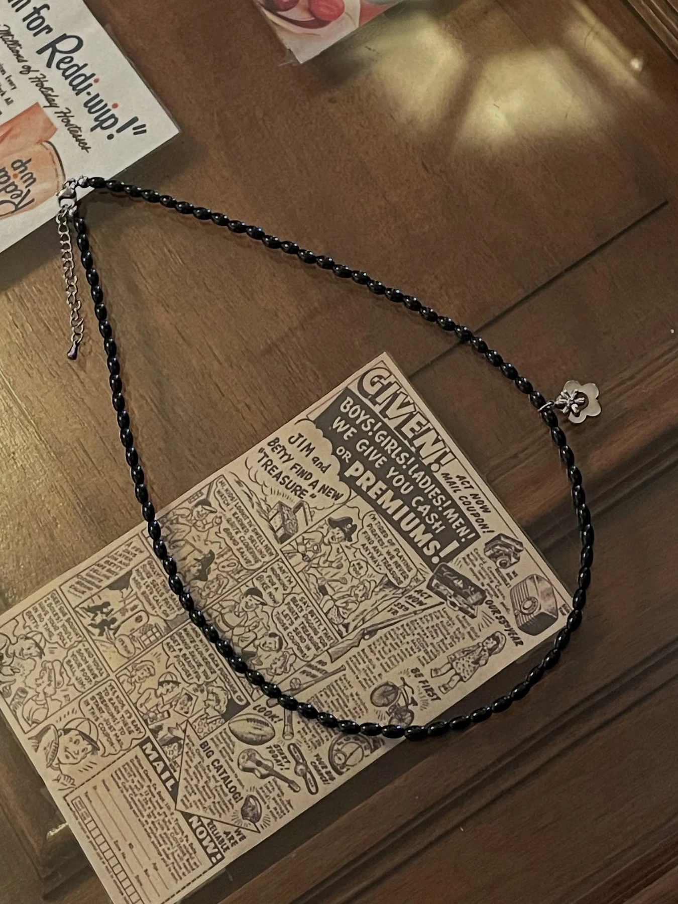
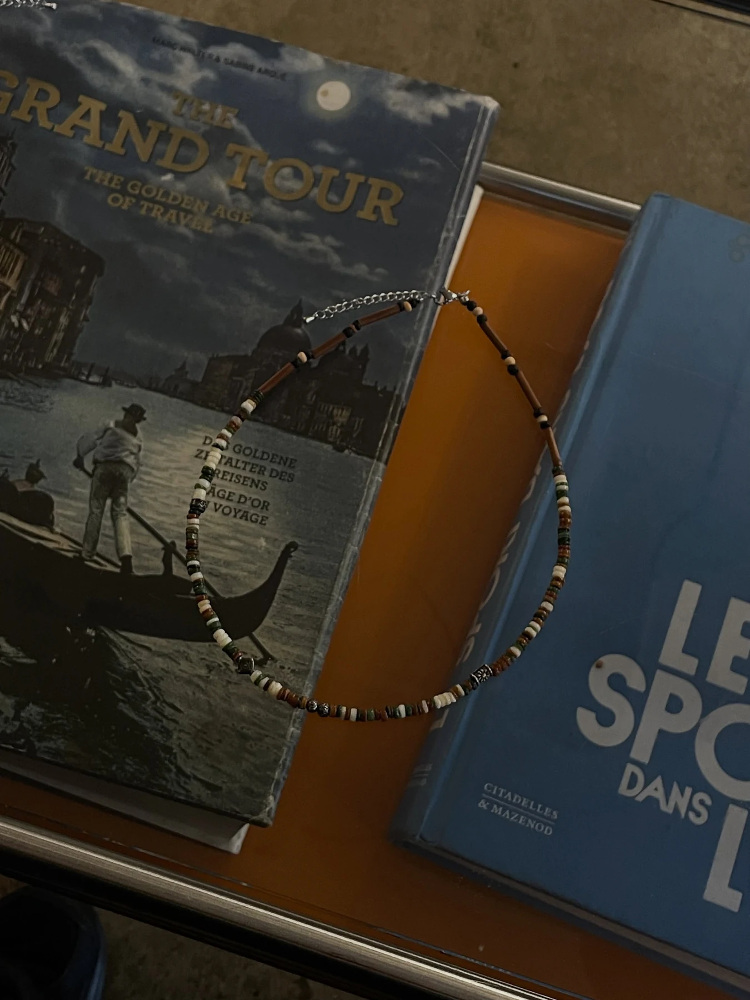
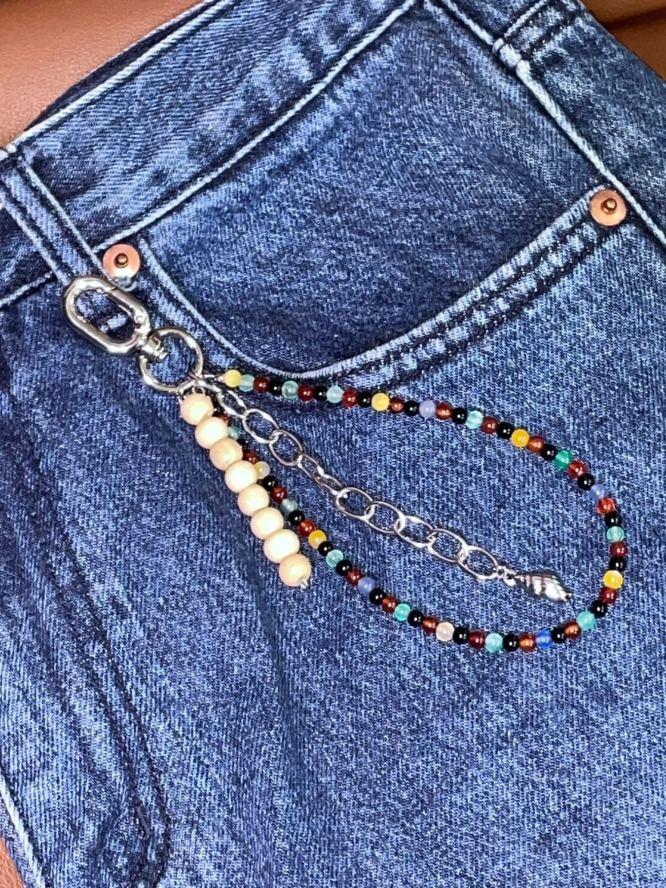
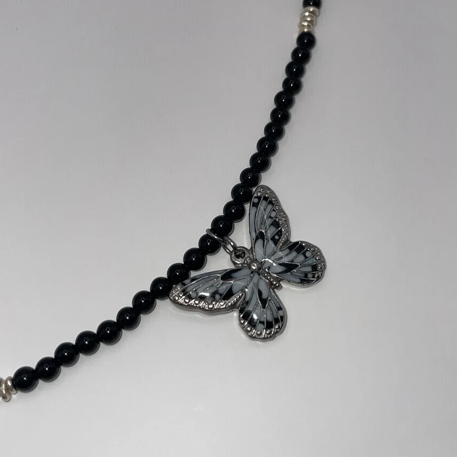
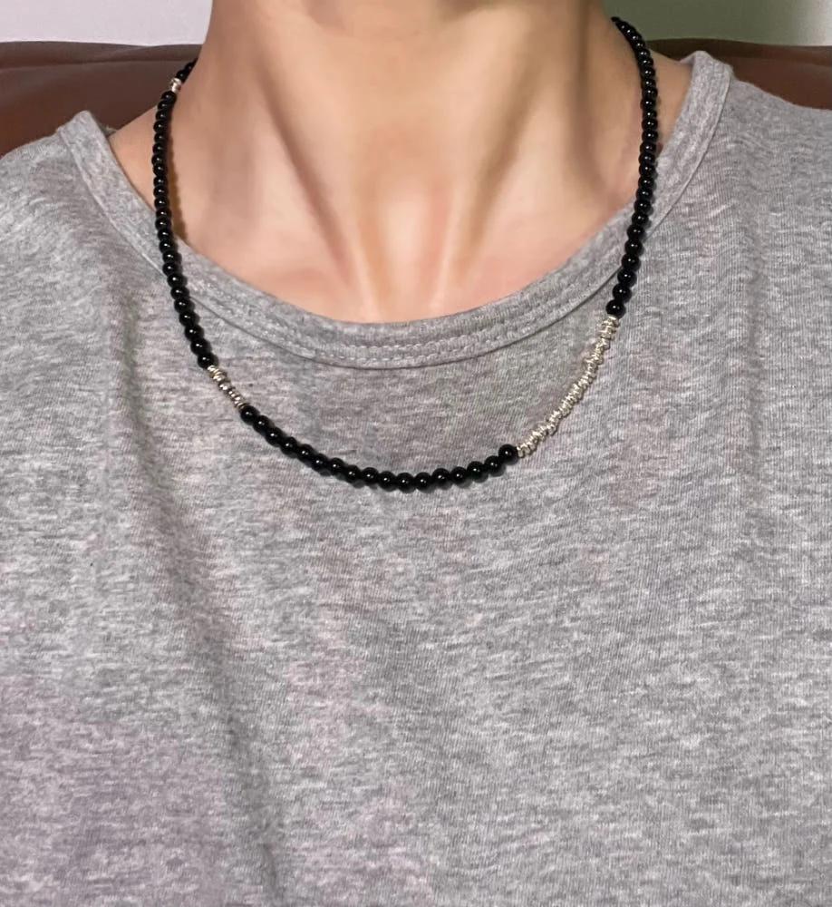

Jewelry as a personal destination
당신의 취향과
마음이 표시된 곳.
지도 위 X는 목적지이자 우리가 찾던 보물이 있는 곳입니다. 온더맵엑스는 일상의 작은 액세서리에 각자의 취향, 기억, 마음이 머무는 지점을 표시합니다.



Discover
your
treasure
your
treasure
Brand Manifesto
평범한 장식이
누군가에게는 보물 같은 순간이 되도록.
우리가 만든 액세서리가 소중한 사람에게 마음을 전하는 선물이 되고, 자신을 아끼는 작은 표시가 되기를 바랍니다. 발견 · 취향 · 마음이 하나의 경로로 이어집니다.
Selected routes
각기 다른 목적지.
제품 하나를 선택하는 행위를 취향의 목적지를 고르는 경험으로 바꿉니다. 시그니처 소재와 상징을 따라 세 가지 경로를 먼저 만나보세요.

Meaning of X
무엇을 착용할지가 아니라,
어디에 마음이 머무는가.
다른 액세서리 브랜드가 형태와 소재를 먼저 말한다면, 온더맵엑스는 제품을 통해 발견되는 개인의 취향과 감정에 집중합니다.
◇
Diamond — 시작
아직 이름 붙이지 않은 취향이 시작되는 지점.
···
Route — 과정
고르고, 조합하고, 마음을 확인하는 발견의 경로.
×
X — 목적지
나에게 의미 있는 보물이 표시된 마지막 지점.
Choose your route
오늘의 X는
어디인가요?
기분과 목적에 따라 가장 가까운 경로를 선택해 보세요.
Quiet Treasure
작지만 오래 남는 취향. 차분한 비즈와 은색 포인트로 일상에 조용한 표시를 남깁니다.
Find your X.
인스타그램에서 새로운 경로를 발견하고, 스마트스토어에서 당신의 보물을 확인하세요.